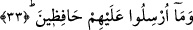
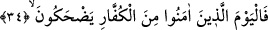
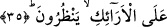

33. Halbuki onlar, müminleri denetleyici olarak gönderilmediler.
“Halbuki
onlar”
yâni
o
mücrimler
“mü’minleri
denetleyici
olarak
gönderilmediler.” Onların üzerinde bekçi olarak gönderilmemişlerdi. Yani onlar Allah
tarafından mü’minler üzerine, onların işlerini gözetmek, yaptıkları amelleri kontrol
etmek, onların doğru veya sapık olduklarına şâhidlik etmek için gönderilmemişlerdi.
Onlara verilen emir sâdece kendi nefislerini ıslah etmekten ibaretti. Şu halde
başkalarının durumlarını incelemekten onlara ne gibi bir fayda olacaktır?! Bu ifâde,
onlarla yapılmış bir istihzâ ifâdesidir. Ayrıca bu ifâde, onların söylemeye cesaret
ettikleri sözün Allah Teâlâ tarafından görevlendirilen bir görevlinin vazifelerinden
olduğuna işâret vardır.
Bazı âlimler yukardaki ifâdenin mücrimlerin söyledikleri sözler cümlesinden
olduğunu mümkün görmüşlerdir. Bu takdirde onlar sanki şöyle demiş olmaktadırlar:
“İşte bunlar sapık insanlardır. Bunlar bizim üzerimize muhafız olarak gönderilmiş
değillerdir.” Bu cümleyle o mücrimler, mü’minlerin insanları şirk yolundan
çevirmelerini ve İslâma çağırmalarını inkâr etmiş olmaktadırlar. Bu, sâdece mânâ
itibariyle nakledilmiş olarak söylenmektedir.
34. İşte o gün (âhirette) de îman edenler kâfirlere gülerler.
“İşte bugün de” yukarda işâret edilen fakir “mü’minler” yine yukarda işâret edilen
ve bilinen “kâfirlere gülerler.” İzzet ve kibir döneminin ardından onları çeşit çeşit
aşağılama ve tahkirin kuşattığını, boğazlarına tasma geçirildiğini ve zelil bir durumda
kaldıklarını gördüklerinde sevinir ve onların bu hâline gülerler. Çünkü kâfirleri o gün
bunca dünya nimetinin, zevk u safâsının ardından çeşitli azaplar sarıp bürüyecektir.
Bazı tefsir kitaplarında ifâde edildiğine göre, yukardaki “fa” harfi, mukadder bir
şartın cevabı olabilir. Buna göre sanki ifâdede şöyle denmiş oluyor: Şâyet siz burada
zikredilenleri tanırsanız biliniz ki bugün yâni kıyamet günü onlar kâfirlere gülecekler.
Buradaki “el-küffar” kelimesinin başındaki “el” takısı ahd içindir. Bu kâfirlerin bilinen
kâfirler olduğunu belirtir.